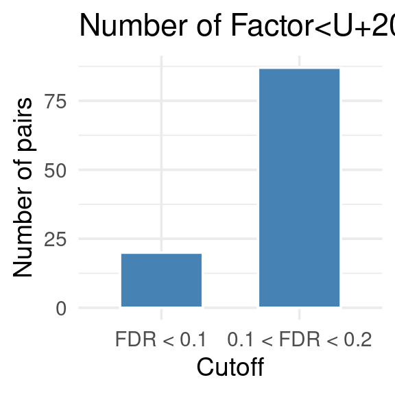

Last updated: 2025-12-02
Checks: 6 1
Knit directory: factor_analysis_new/
This reproducible R Markdown analysis was created with workflowr (version 1.7.0). The Checks tab describes the reproducibility checks that were applied when the results were created. The Past versions tab lists the development history.
The R Markdown file has unstaged changes. To know which version of
the R Markdown file created these results, you’ll want to first commit
it to the Git repo. If you’re still working on the analysis, you can
ignore this warning. When you’re finished, you can run
wflow_publish to commit the R Markdown file and build the
HTML.
Great job! The global environment was empty. Objects defined in the global environment can affect the analysis in your R Markdown file in unknown ways. For reproduciblity it’s best to always run the code in an empty environment.
The command set.seed(20221201) was run prior to running
the code in the R Markdown file. Setting a seed ensures that any results
that rely on randomness, e.g. subsampling or permutations, are
reproducible.
Great job! Recording the operating system, R version, and package versions is critical for reproducibility.
Nice! There were no cached chunks for this analysis, so you can be confident that you successfully produced the results during this run.
Great job! Using relative paths to the files within your workflowr project makes it easier to run your code on other machines.
Great! You are using Git for version control. Tracking code development and connecting the code version to the results is critical for reproducibility.
The results in this page were generated with repository version 8189e6f. See the Past versions tab to see a history of the changes made to the R Markdown and HTML files.
Note that you need to be careful to ensure that all relevant files for
the analysis have been committed to Git prior to generating the results
(you can use wflow_publish or
wflow_git_commit). workflowr only checks the R Markdown
file, but you know if there are other scripts or data files that it
depends on. Below is the status of the Git repository when the results
were generated:
Unstaged changes:
Modified: analysis/revision_summarizing_ECT_setting_SLEremoved_gtex.Rmd
Note that any generated files, e.g. HTML, png, CSS, etc., are not included in this status report because it is ok for generated content to have uncommitted changes.
These are the previous versions of the repository in which changes were
made to the R Markdown
(analysis/revision_summarizing_ECT_setting_SLEremoved_gtex.Rmd)
and HTML
(docs/revision_summarizing_ECT_setting_SLEremoved_gtex.html)
files. If you’ve configured a remote Git repository (see
?wflow_git_remote), click on the hyperlinks in the table
below to view the files as they were in that past version.
| File | Version | Author | Date | Message |
|---|---|---|---|---|
| Rmd | 449bd01 | XSun | 2025-11-25 | update |
| html | 449bd01 | XSun | 2025-11-25 | update |
We used data from GTEx whole blood tissue, it contains 670 samples for the gene expression data.
We applied cutoffs of + - supporting SNP ≥ 5 and -
gene number in pathway ≥ 20
to filter the pairs before performing FDR control. All results presented below are based on this setting.
library(dplyr)
library(ggplot2)
library(gridExtra)
celltypes <- c("Whole_Blood")
types <- c("Whole Blood")
names(celltypes) <- types
names(types) <- celltypes
folder_ect_summary <- "/project/xinhe/xsun/pathway_factor/analysis/1.ECT_gtex/ECT_summary/"df <- readRDS("/project/xinhe/xsun/pathway_factor/analysis/1.ECT_gtex/ECT_summary/Whole_Blood_ECT_summary_poolalltraits_selected.RDS")
df_all <- df[complete.cases(df$ECT_FDR_5suppSNP),]
df_all_fdr02 <- df_all[df_all$ECT_FDR_5suppSNP < 0.2 & df_all$ECT_FDR_5suppSNP >0.1,]
df_all_fdr01 <- df_all[df_all$ECT_FDR_5suppSNP < 0.1,]
df_count <- data.frame(
cutoff = c("FDR < 0.1", "0.1 < FDR < 0.2"),
count = c(nrow(df_all_fdr01), nrow(df_all_fdr02))
)
df_count$cutoff <- factor(df_count$cutoff,
levels = c("FDR < 0.1", "0.1 < FDR < 0.2"))
# bar plot
ggplot(df_count, aes(x = cutoff, y = count, fill = cutoff)) +
geom_bar(stat = "identity", width = 0.6, color = "white") +
scale_fill_manual(values = c(
"FDR < 0.1" = "steelblue",
"0.1 < FDR < 0.2" = "steelblue"
)) +
labs(x = "Cutoff", y = "Number of pairs",
title = "Number of Factor–Trait Pairs Passing FDR Cutoffs") +
theme_minimal(base_size = 14) +
theme(legend.position = "none")
| Version | Author | Date |
|---|---|---|
| 449bd01 | XSun | 2025-11-25 |
DT::datatable(df_all_fdr01,caption = htmltools::tags$caption( style = 'caption-side: left; text-align: left; color:black; font-size:150% ;','Pairs with ECT FDR <= 0.1 '),options = list(pageLength = 10) )Highlight:
ref: https://www.sciencedirect.com/science/article/abs/pii/S0962892423001927
ref: https://pmc.ncbi.nlm.nih.gov/articles/PMC4067166/
The non-mucin O-glycans in this pathway include:
These modifications directly affect:
Changes in these O-glycans alter plasma LDL levels and cholesterol homeostasis.
| Pathway | Trait | Evidence Level | Mechanism Type | Short Rationale |
|---|---|---|---|---|
| Cell cycle | Hemoglobin | Strong | Cell-intrinsic | Erythroid progenitors require cell-cycle exit for globin expression; disruptions alter Hb. |
| Axon guidance | Hematocrit | Indirect / Weak | Vascular/hematopoietic | SLIT/ROBO, Eph/ephrin affect HSPC niches but not steady Hct directly. |
| Oocyte meiosis | RBC count | None | None | No erythroid relevance; only generic cell-cycle overlap. |
| Platelet activation | Hematocrit | Indirect | Hemodynamic/platelet physiology | Hct modulates platelet activation; platelet pathways don’t determine RBC mass. |
| Sphingolipid signaling | Hematocrit | Moderate | Cell-intrinsic + Inflammatory | S1P/ceramide regulate erythroid survival & inflammatory anemia. |
| Progesterone-mediated oocyte maturation | Hemoglobin | Weak/Indirect | Endocrine systemic | Progesterone alters plasma volume/iron loss, not via this KEGG pathway. |
| Pyruvate metabolism | Hemoglobin | Strong | Cell-intrinsic (RBC glycolysis) | RBCs require glycolysis; pyruvate kinase defects cause low Hb. |
| Ras signaling | Hematocrit | Strong | Cell-intrinsic | Key EPO/SCF pathway in erythropoiesis; modulates red-cell output. |
| Leukocyte transendothelial migration | Hematocrit | Indirect | Inflammation | LTM influences vascular inflammation; Hct affects flow, not vice versa. |
| Other O-glycan biosynthesis | LDL cholesterol | Moderate / Strong | Metabolic | Glycosylation alters LDLR function and apo-protein clearance. |
| NOD-like receptor signaling | RBC count | Strong | Immune/inflammatory | NLRP3 inflammasome drives ineffective erythropoiesis and inflammatory anemia. |
| Regulation of lipolysis in adipocytes | Ulcerative colitis | Indirect | Metabolic systemic | Lipolytic pathways altered in UC; systemic metabolic consequence not primary cause. |
| Aminoacyl-tRNA biosynthesis | Ulcerative colitis | Indirect | Metabolic/cellular stress | Commonly enriched signature in UC omics; reflects translational stress. |
| Phospholipase D signaling | Hematocrit | Weak / Indirect | Signaling | Broad signaling role; no direct erythropoietic mechanism. |
| RNA polymerase | RBC count | Strong | Cell-intrinsic | Essential for erythroid transcription and globin gene expression. |
| mRNA surveillance | Hemoglobin | Strong | Cell-intrinsic | NMD regulates globin transcripts; central to thalassemia/β-globin expression. |
| Rap1 signaling | Hematocrit | Indirect | Vascular + RBC adhesion | Influences integrin signaling and RBC adhesion; not a core Hct regulator. |
| Oocyte meiosis | IBD | None | None | No relevance; pathway is oocyte-specific. |
| Ubiquitin-mediated proteolysis | LDL cholesterol | Strong | Metabolic | IDOL–LDLR axis controls LDL receptor degradation → LDL levels. |
| Necroptosis | RBC count | Moderate / Strong | Cell-intrinsic | RBCs undergo regulated necroptosis; contributes to hemolysis and low RBC count. |
We extract the top 10 genes with highest loadings on the factor, and then examine their common functions (by ChatGPT)
| Gene | Main Function | RBC Role Through This Function? | Explanation |
|---|---|---|---|
| ADCY5 | cAMP production, GPCR signaling | Possibly Yes | cAMP signaling modulates EPO receptor signaling and erythroid proliferation. Not RBC-specific, but pathway is relevant. |
| RBX1 | E3 ubiquitin ligase component | Possible | Ubiquitin–proteasome system controls erythroblast cell-cycle and apoptosis, but RBX1 is general, not erythroid-specific. |
| PTTG2 | Cell cycle / chromatid separation | Possible (weak) | Erythroblasts divide rapidly, so cell-cycle genes matter, but PTTG2 is not known to have an erythroid-specific role. |
| CCNE2 | Cyclin E2, G1/S transition | Possible | G1/S regulators are essential during early erythroid expansion, but CCNE2 is general, not RBC-specific. |
| CDC16 | APC/C subunit (mitosis control) | Possible (weak) | APC/C activity is required in all dividing cells; erythroblasts also rely on it, but CDC16 itself is not RBC-enriched. |
| ANAPC13 | APC/C assembly | Possible (weak) | Same as CDC16—mitotic machinery required, but not specific to erythropoiesis. |
| CAMK2G | Ca²⁺-dependent kinase | Unlikely | Ca²⁺ signaling is important in many cells; erythropoiesis mainly depends on CaMKIIβ, not CAMK2G specifically. |
| MAPK13 | p38 MAPK signaling (stress, inflammation) | Possible | p38 MAPK pathway regulates erythroid differentiation; MAPK13 is p38δ, which is less studied but may have minor roles. |
| SPDYA | Activates CDK1/2 | Possible | CDKs are required for erythroblast cycling, but SPDYA is not a known erythroid regulator. |
| IGF1 | Growth factor | Strong Yes | IGF1 directly stimulates erythroid progenitor proliferation and survival (BFU-E, CFU-E). Clear RBC biology. |
sessionInfo()R version 4.2.0 (2022-04-22)
Platform: x86_64-pc-linux-gnu (64-bit)
Running under: CentOS Linux 7 (Core)
Matrix products: default
BLAS/LAPACK: /software/openblas-0.3.13-el7-x86_64/lib/libopenblas_haswellp-r0.3.13.so
locale:
[1] C
attached base packages:
[1] stats graphics grDevices utils datasets methods base
other attached packages:
[1] gridExtra_2.3 ggplot2_4.0.0 dplyr_1.1.4
loaded via a namespace (and not attached):
[1] Rcpp_1.0.12 highr_0.9 RColorBrewer_1.1-3 pillar_1.9.0
[5] compiler_4.2.0 bslib_0.3.1 later_1.3.0 jquerylib_0.1.4
[9] git2r_0.30.1 workflowr_1.7.0 tools_4.2.0 digest_0.6.29
[13] gtable_0.3.6 jsonlite_1.8.0 evaluate_0.15 lifecycle_1.0.4
[17] tibble_3.2.1 pkgconfig_2.0.3 rlang_1.1.2 cli_3.6.1
[21] rstudioapi_0.13 crosstalk_1.2.0 yaml_2.3.5 xfun_0.41
[25] fastmap_1.1.0 withr_2.5.0 stringr_1.5.1 knitr_1.39
[29] htmlwidgets_1.5.4 generics_0.1.2 fs_1.5.2 vctrs_0.6.5
[33] sass_0.4.1 DT_0.22 grid_4.2.0 rprojroot_2.0.3
[37] tidyselect_1.2.0 glue_1.6.2 R6_2.5.1 fansi_1.0.3
[41] rmarkdown_2.25 farver_2.1.0 magrittr_2.0.3 whisker_0.4
[45] scales_1.4.0 promises_1.2.0.1 htmltools_0.5.2 dichromat_2.0-0.1
[49] httpuv_1.6.5 labeling_0.4.2 S7_0.2.0 utf8_1.2.2
[53] stringi_1.7.6